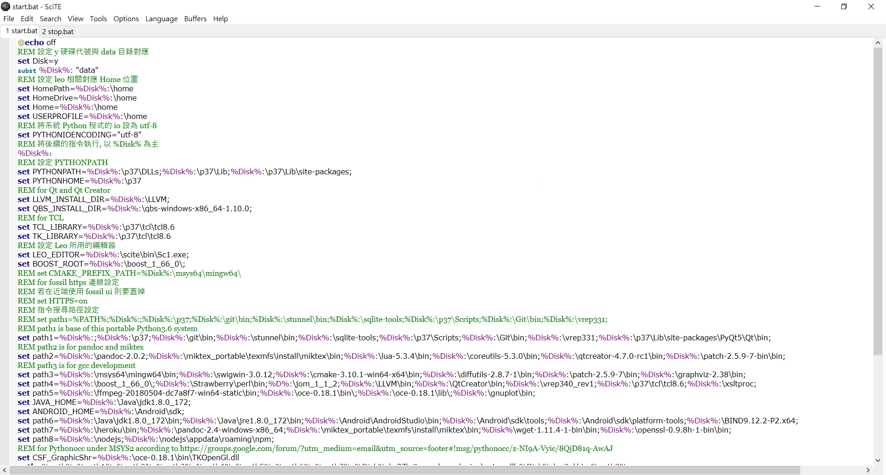
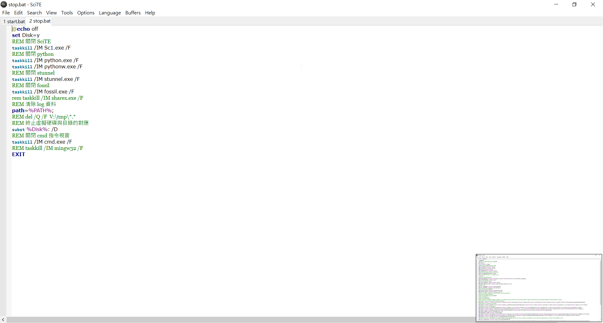

心得:
這星期為了配合228連假的補課，所以從下午1:20一連貫的上到晚上9:50，雖然這途中有休息，但還是覺得非常的累，這周要做出一個自製的可攜Python系統，這東西除了要到官方的python3.7.2下載外，還得載下SciTe editor的編譯器，為的是能夠在裡面寫下開啟python系統的編譯程式碼，除此之外要再下載一個hxd二維編譯碼，為了要讓執行時可在自己要求的home裡頭執行，最後最重要的是必須了解之前python系統的start、stop批次檔的內容寫的是什麼，光是最後一個就是很煩躁的東西，因為只要弄錯，可能就無法開啟，或是開完後無法關閉，這天光是處理這個就很燒腦了，且還得用global檢查code是否是自己要的，做完後的我只感覺到稍微放鬆，畢竟一件東西最可怕的不是它有多難，而是如何去摸索並得知裏頭的涵義，就算了解了也不會覺得開心，而是一種奇怪的滿足感罷了。
簡易製作過程:https://mdekmol.github.io/cd2019b-task1-2019cdb_t1_g5/content/week1.html

